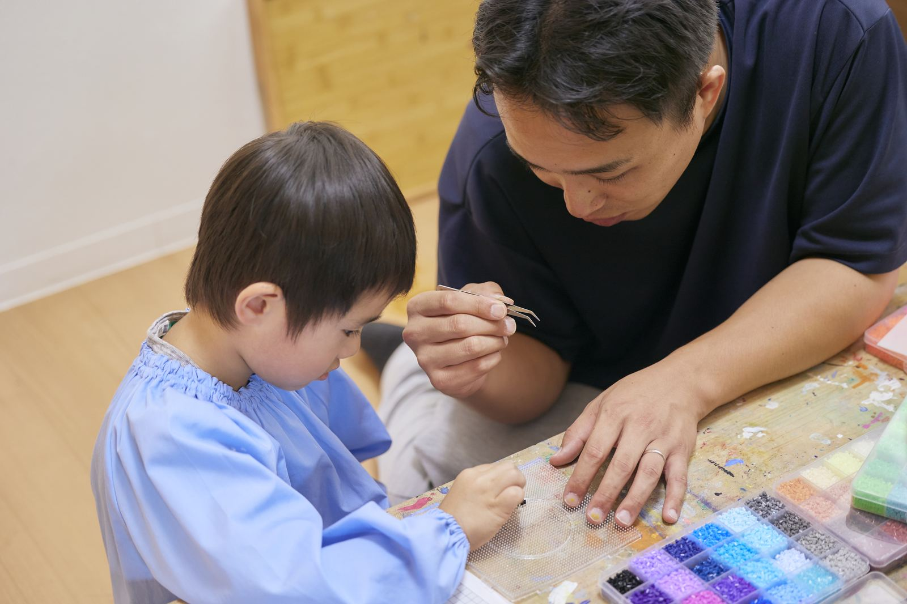
ものづくり（認知面）
手先を使い、形や色を選び、自分の作品をつくる時間。集中力や発想力、余暇の過ごし方の土台をつくります。
Child Development
らふ田口店は、就学前のあそびと経験のなかで「得意」の芽を見つけることに集中した事業所です。 未就学の時期に合わせた少人数の関わりで、認知面・運動面をていねいに育てます。
1.5〜6歳 未就学児のための場所
Service
まだ経験していないことを、あそびのなかで経験する。潜在的な力を見つけ、伸ばすお手伝いをします。

手先を使い、形や色を選び、自分の作品をつくる時間。集中力や発想力、余暇の過ごし方の土台をつくります。
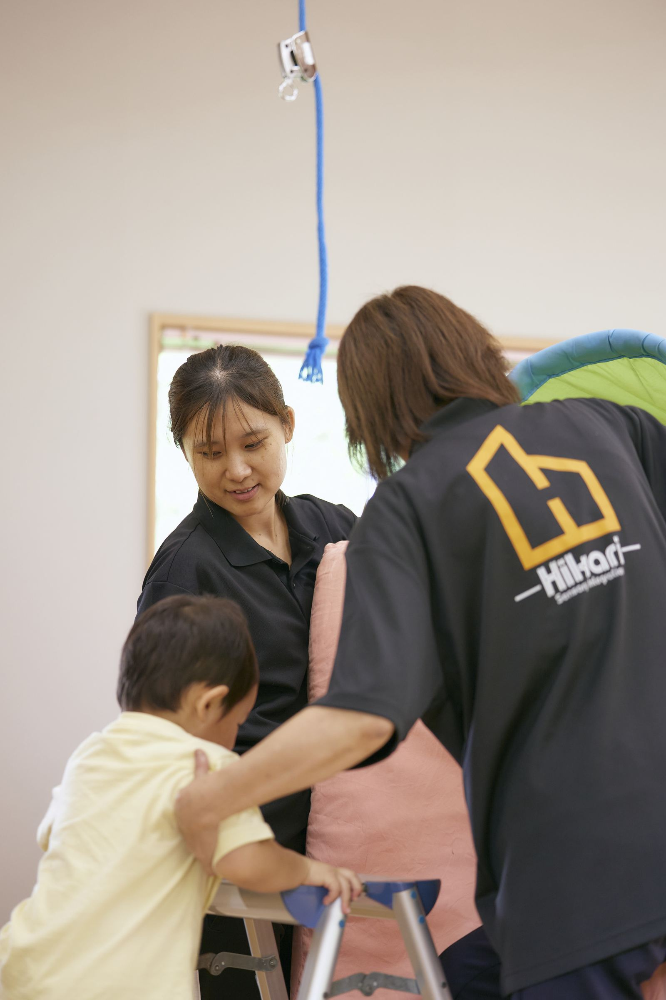
室内での運動療育やからだを使うあそびを通して、バランス感覚や体幹、達成感を育みます。
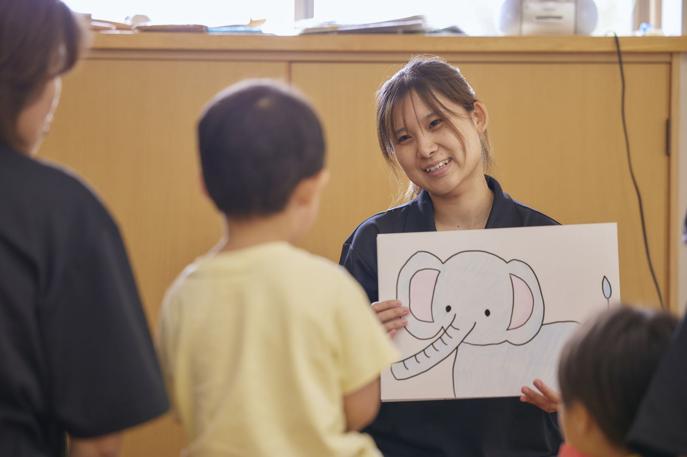
つくった作品の展示など、地域とつながる機会を大切にしています。小さな成功体験を、外の世界へ広げます。
Availability
児童発達支援の枠です。午前・午後それぞれ1枠5名（ものづくり2名・運動3名）。 残りの人数がひと目で分かるようにしています。
ものづくり
運動
ものづくり
運動
Works
子どもたちのものづくりから生まれた作品の一部です。
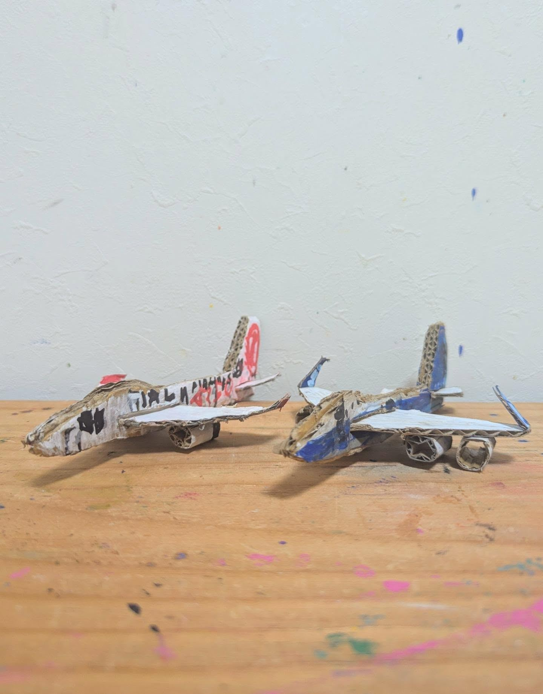
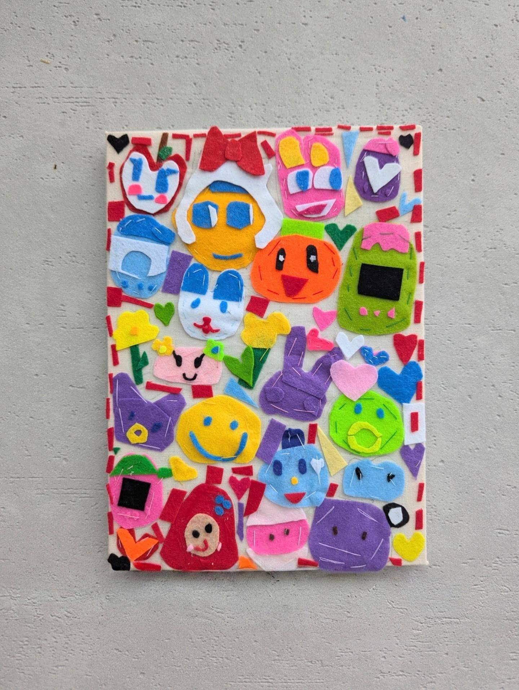
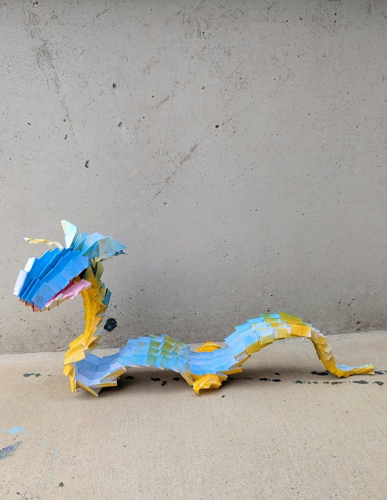
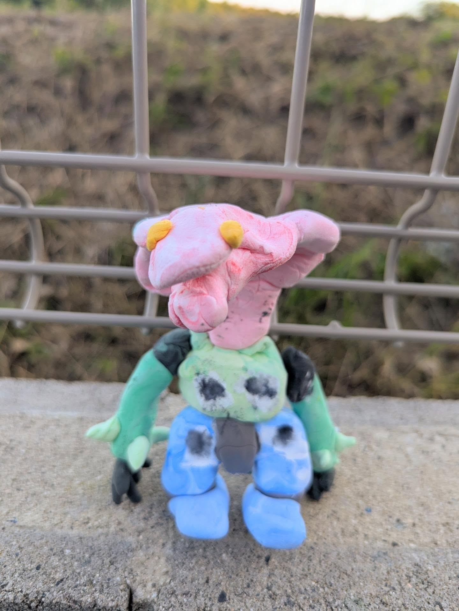
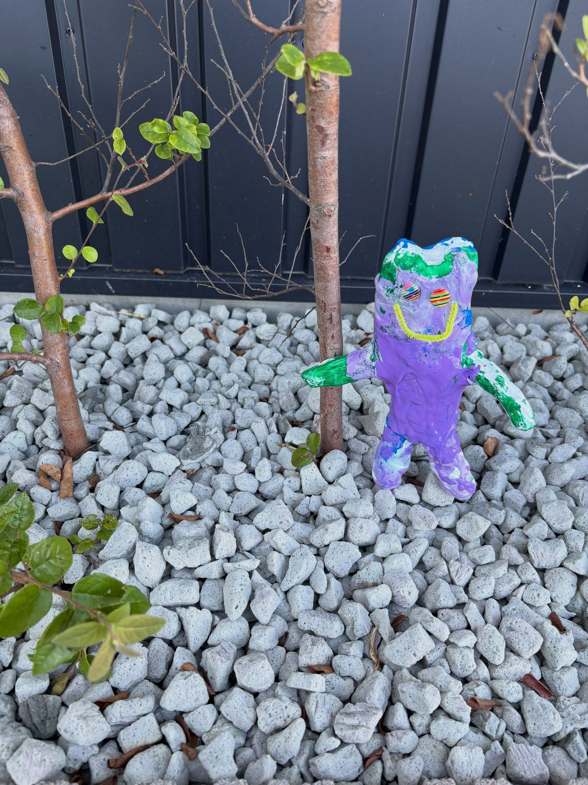
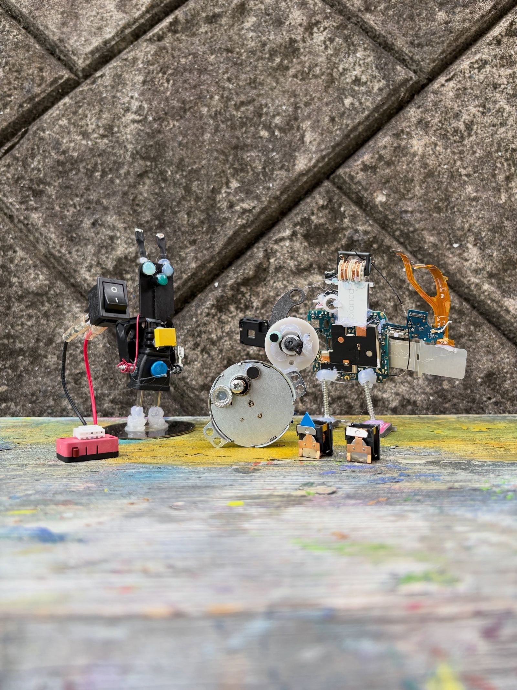
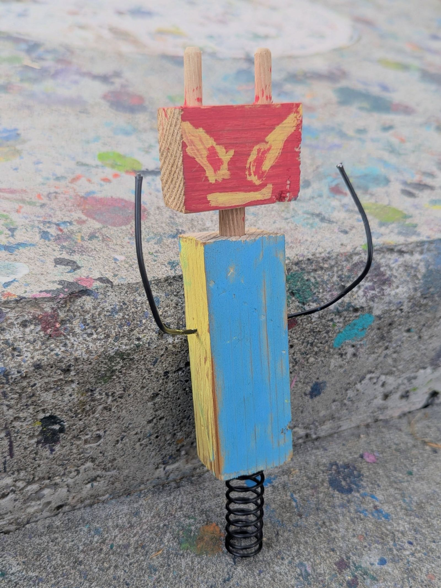
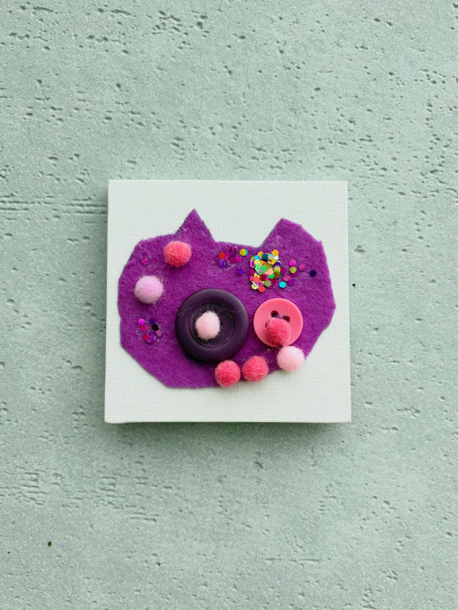
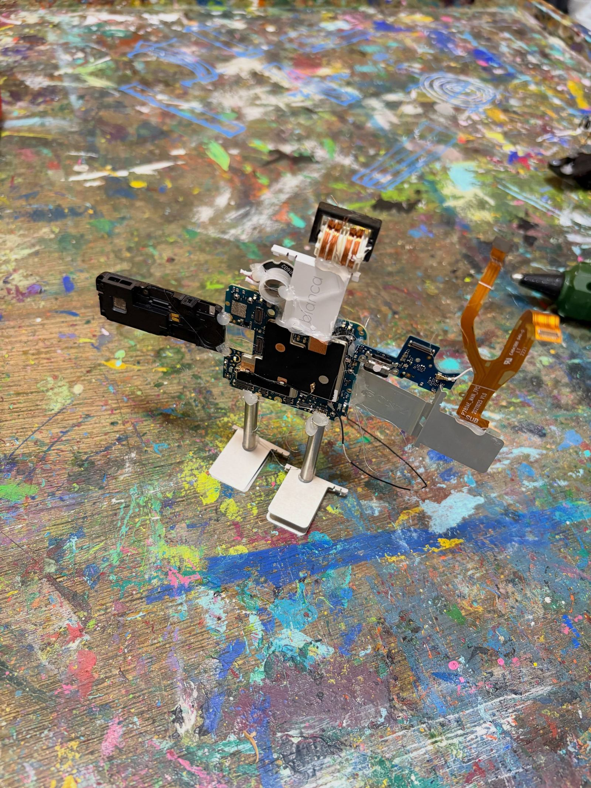
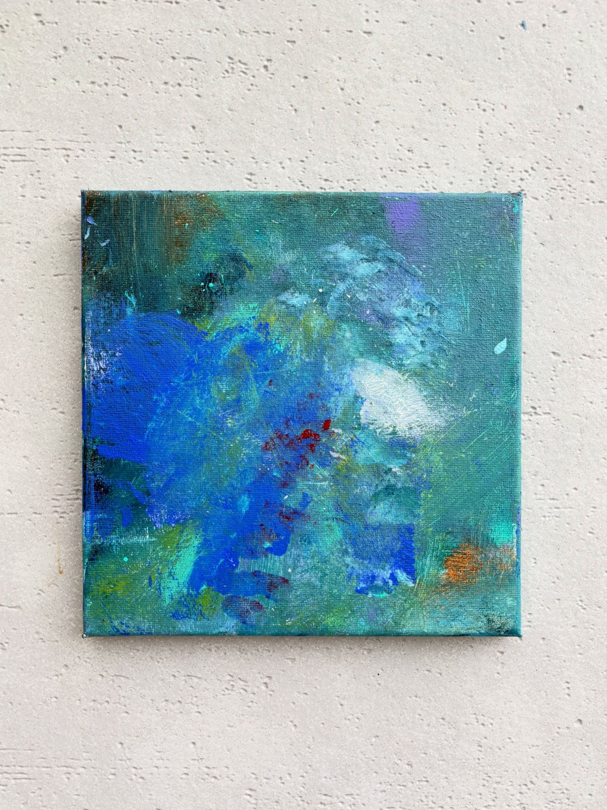
Company
見学・空き状況のご相談は、お電話または Instagram の DM へお気軽にどうぞ。
| 事業所名 | 児童発達支援 らふ 田口店 |
|---|---|
| サービス | 児童発達支援（未就学児向けプログラム） |
| 対象年齢 | 1.5歳〜6歳（未就学児） |
| 責任者 | 酒井 広道 |
| 所在地 | 〒739-0036 広島県東広島市西条町田口23 |
| 電話 | 070-9228-4786 |
| 利用可能日 | 月・水・木・金・土 |
| 運営 | 有限会社 デイサービスセンターひかり |
| @raf.ryoiku |
空き枠の確認やプログラムのご説明も、お気軽にご連絡ください。